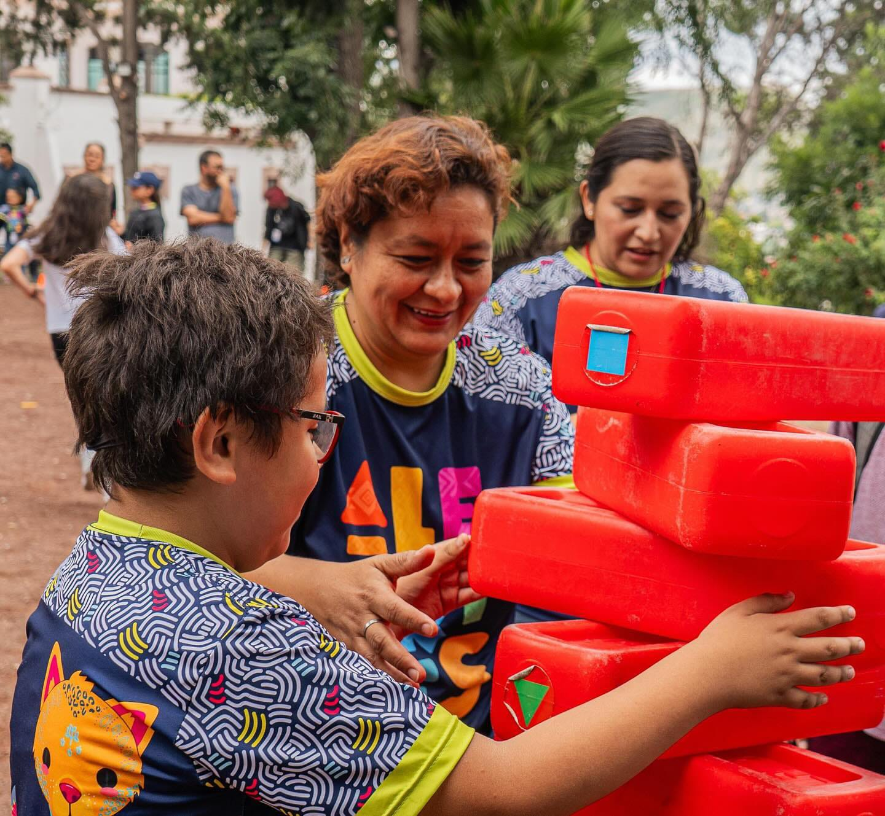
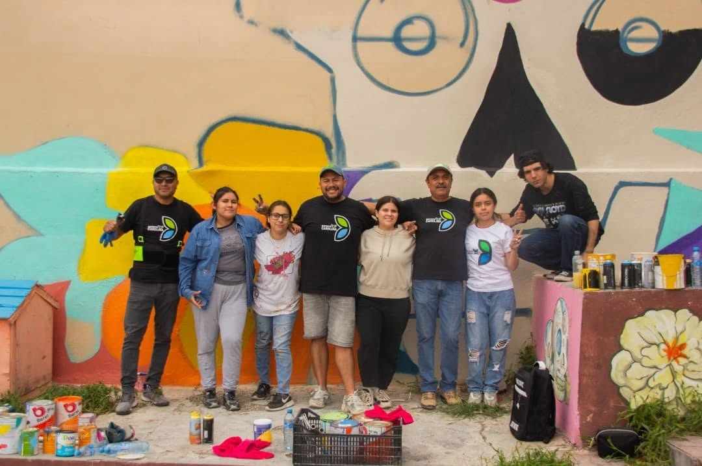
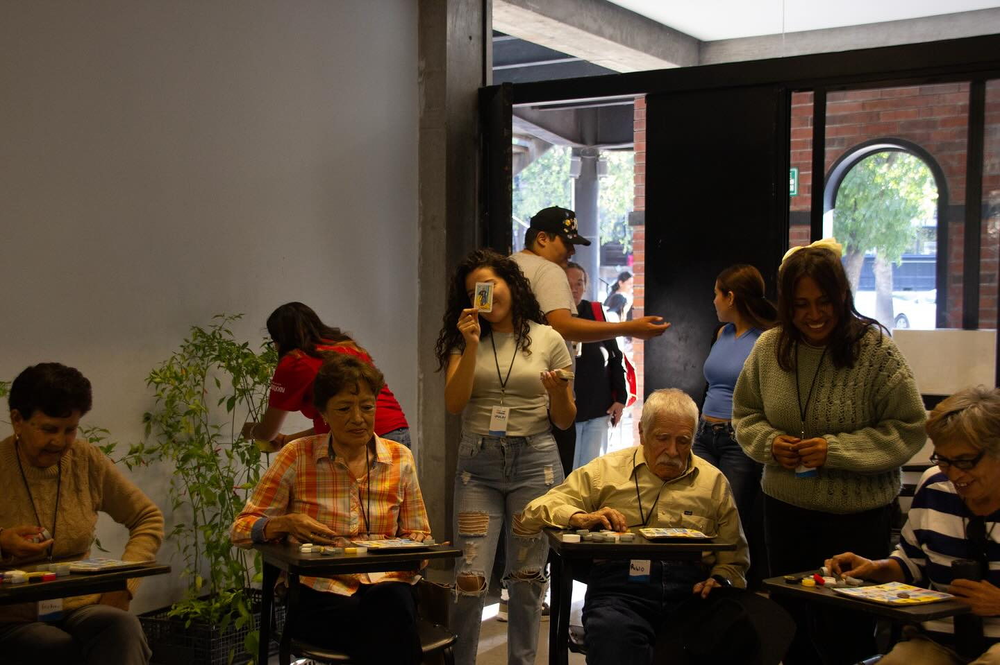
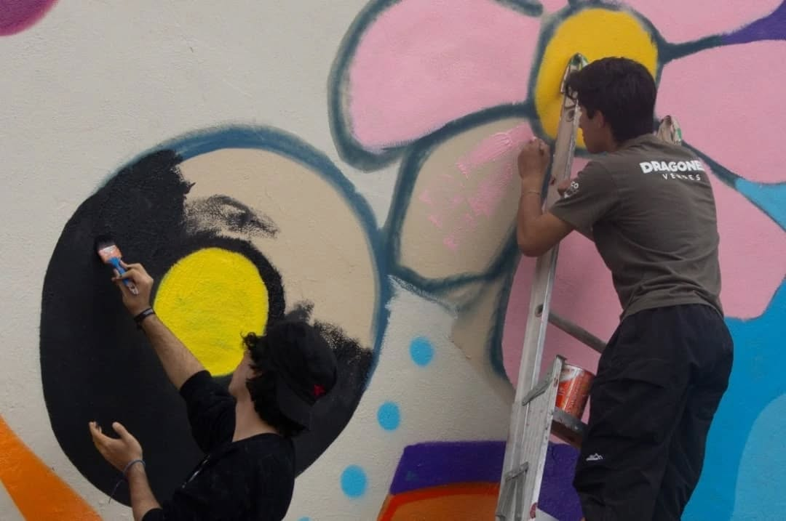
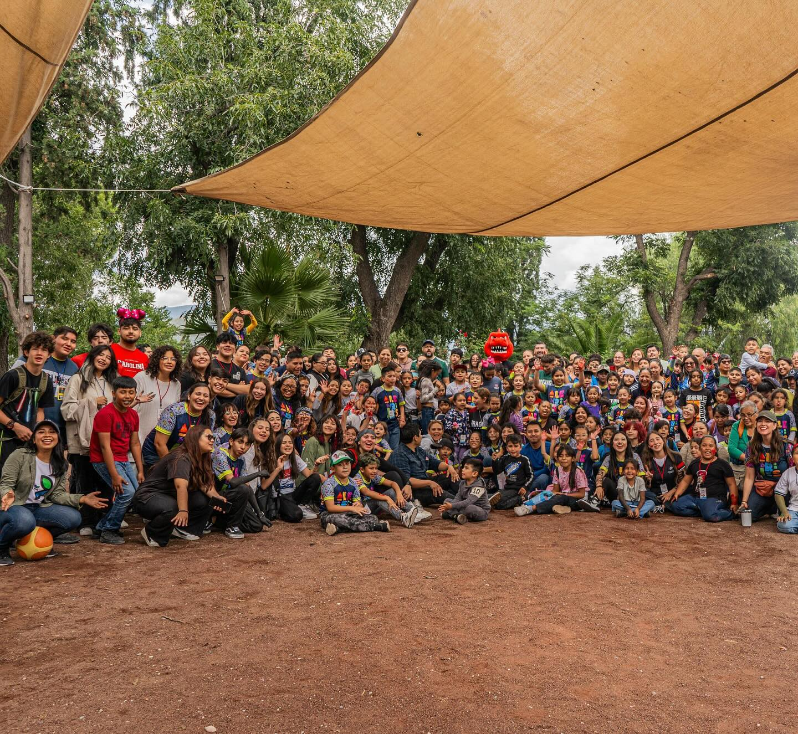
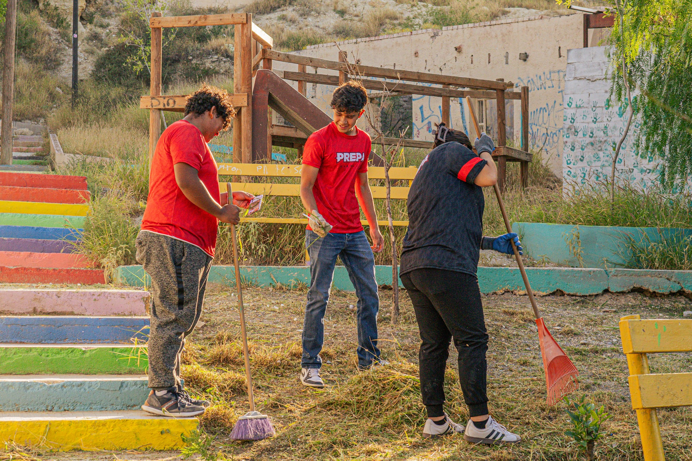
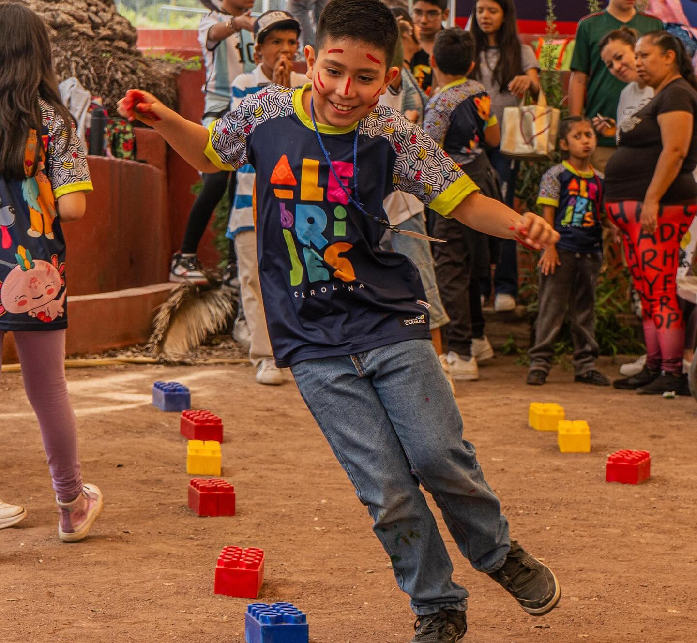
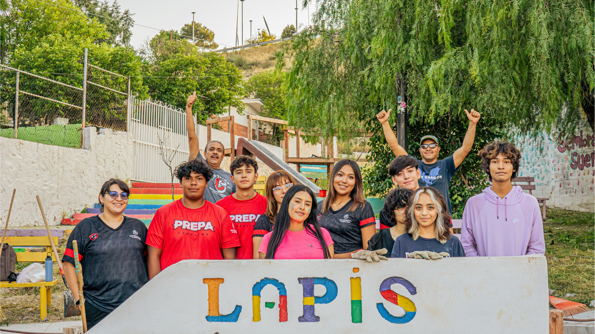
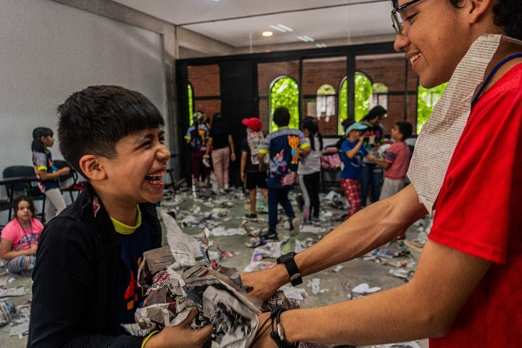
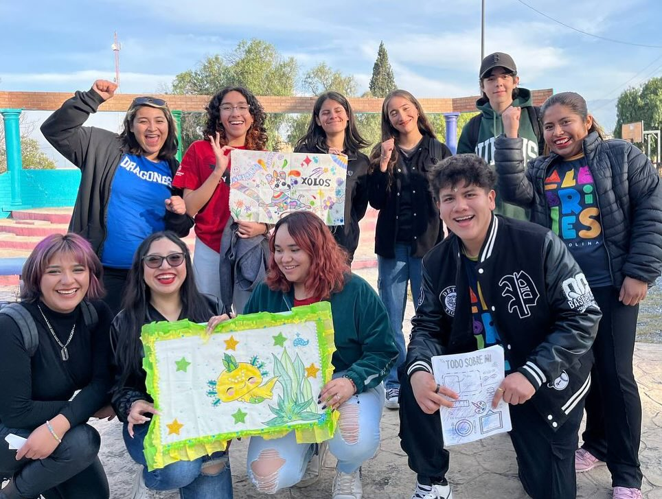

¿Qué es el servicio social?
El servicio social en la preparatoria es una actividad que permite a los estudiantes aplicar los conocimientos y habilidades adquiridos en su formación académica en beneficio de la comunidad. Es una oportunidad para contribuir al desarrollo social, cultural o ambiental de su entorno, al mismo tiempo que se fomenta el sentido de responsabilidad ciudadana y se adquiere experiencia en diversos ámbitos.
Importancia del servicio social
El servicio es una experiencia clave para el desarrollo personal y académico de los estudiantes. Más allá de ser un requisito, les permite fortalecer valores como la responsabilidad, la solidaridad y el compromiso con la comunidad.
Galería










×
❮
❯